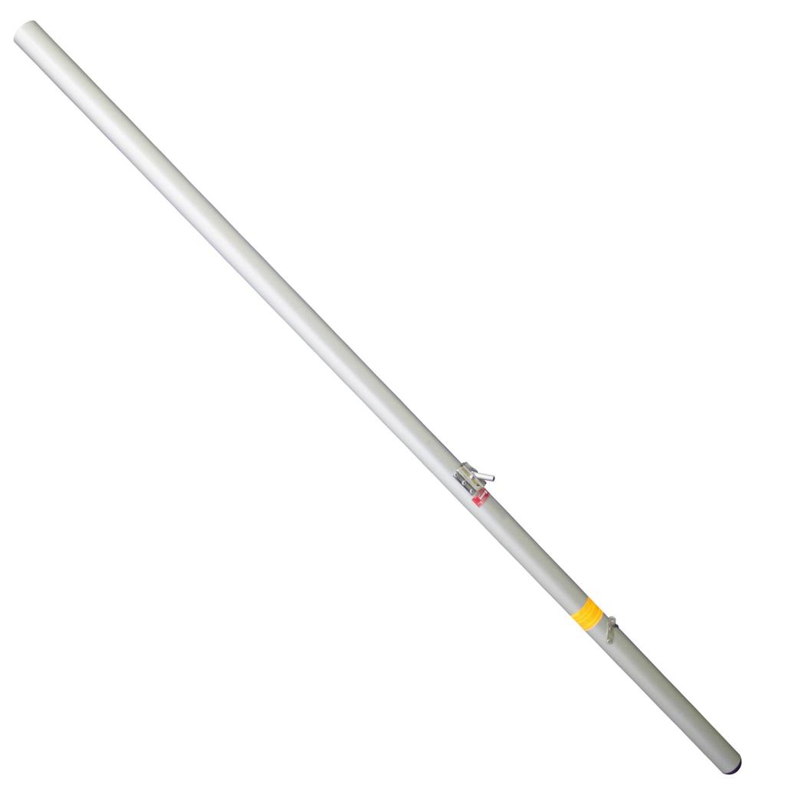
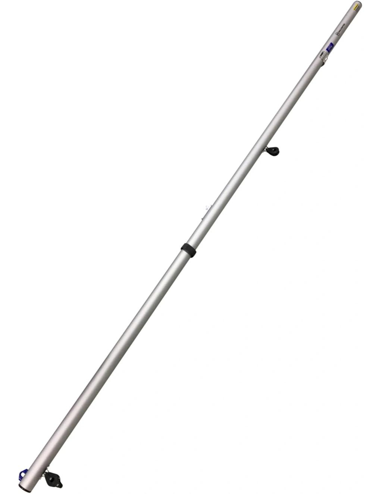
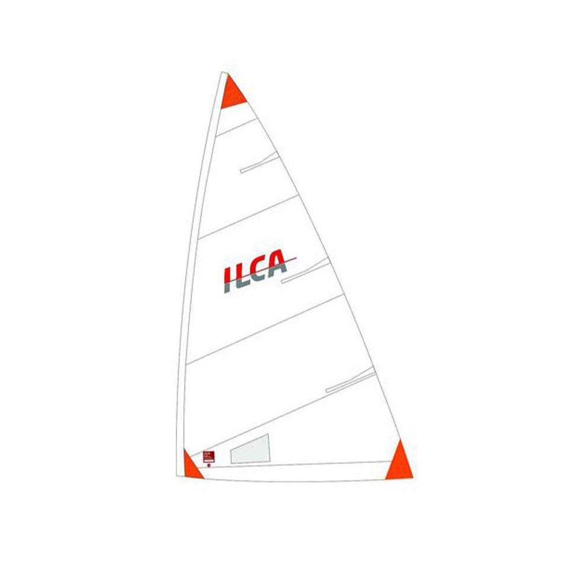
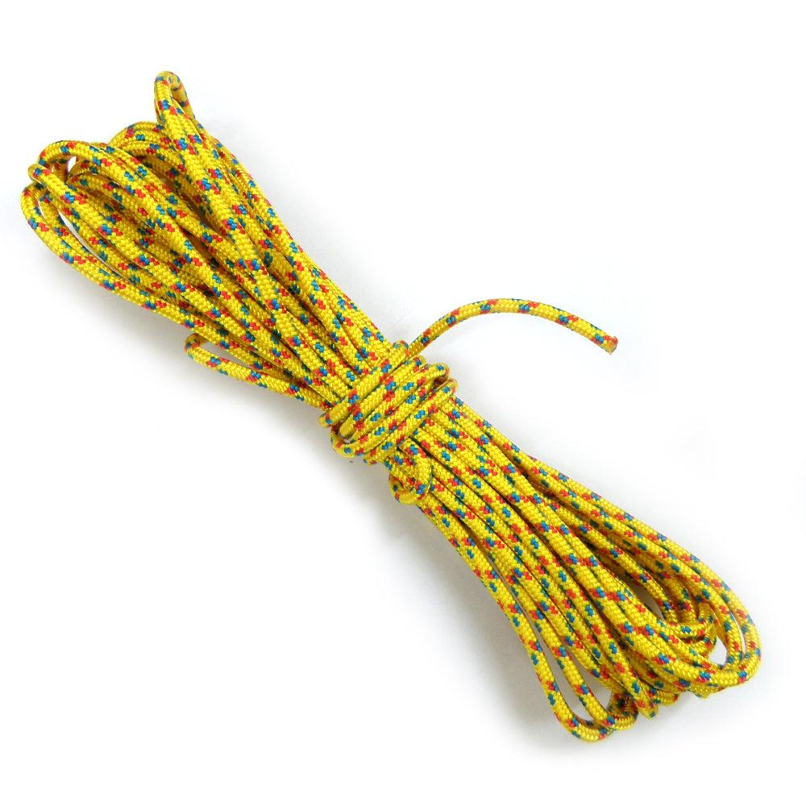
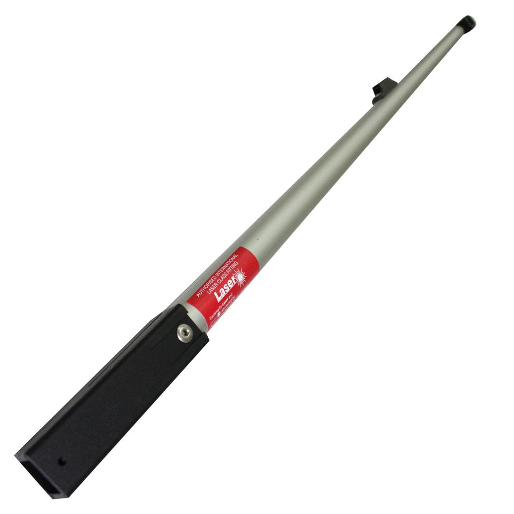
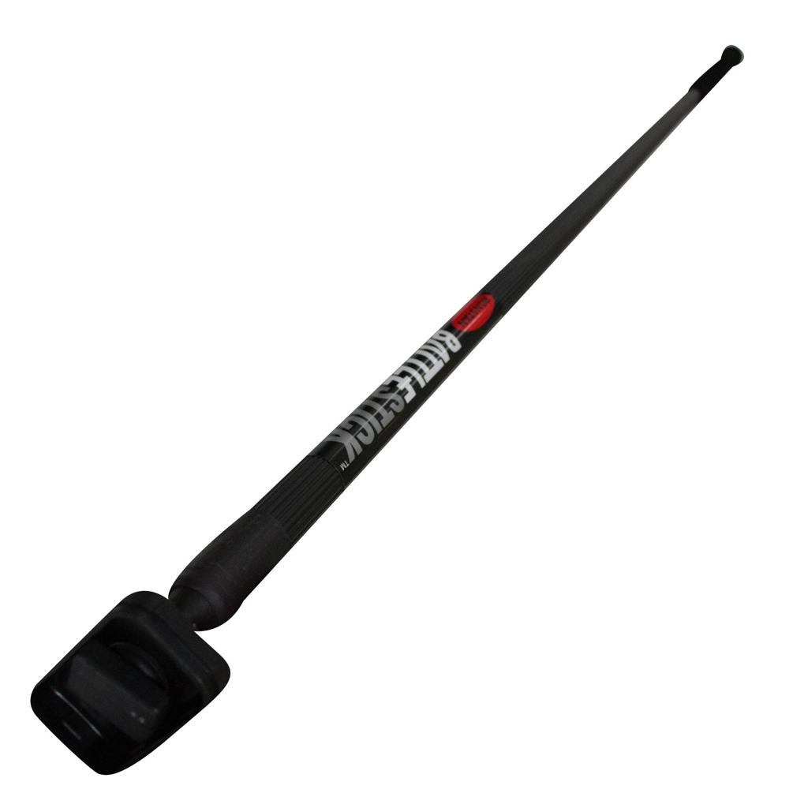
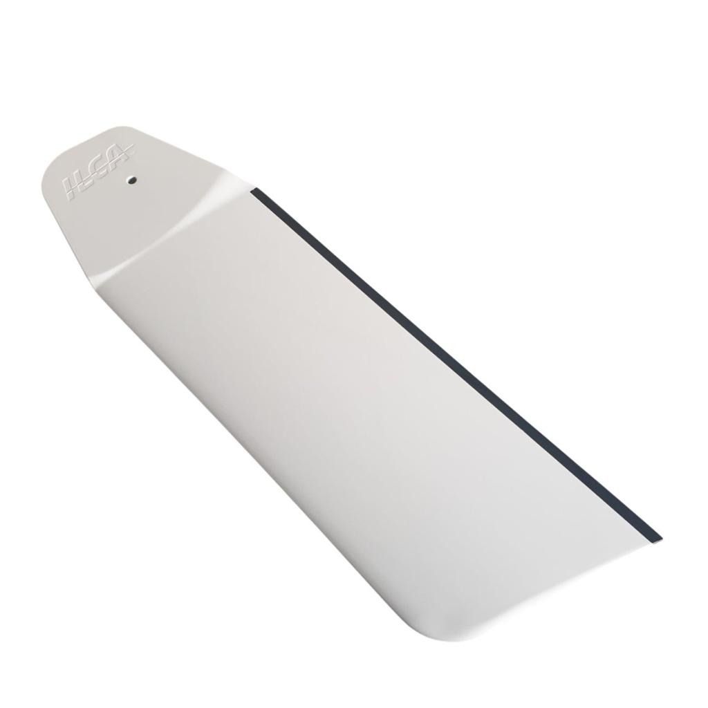
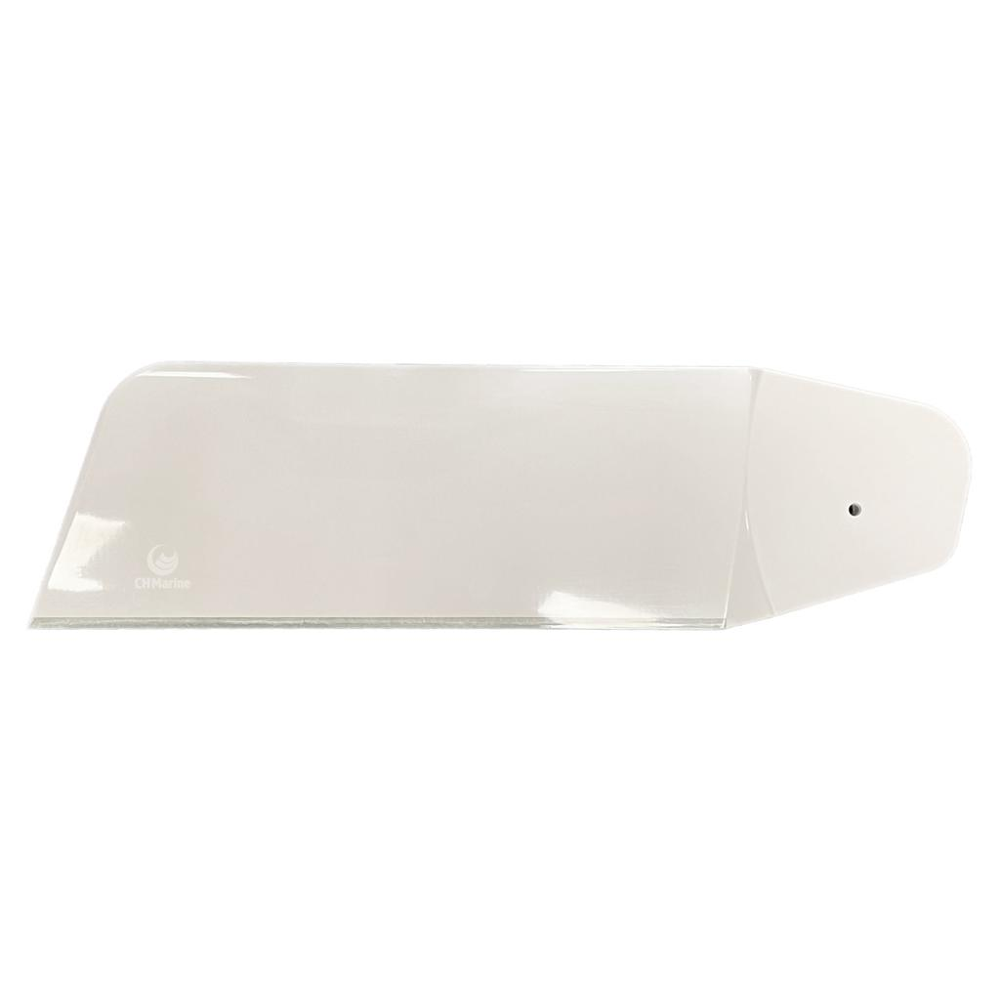
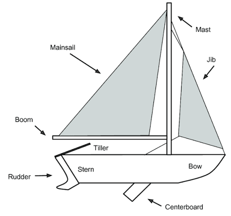

Module 3
Parts of a Dinghy
Before learning to sail, it is important to become familiar with the main parts of a dinghy. Knowing their names and functions will make it easier to understand instructions both on shore and on the water.
Learning Objectives
After completing this lesson, you should be able to:
- Identify the major parts of a sailing dinghy.
- Understand the purpose of each part.
- Learn the basic sailing terms used by instructors.
The Hull
The hull is the main body of the dinghy. It provides buoyancy and keeps the boat afloat. Everything else is attached to or supported by the hull.
Mast
The vertical spar that supports the sail.

Boom
The horizontal spar attached to the bottom of the sail. It swings from side to side as the sail is trimmed.

Mainsail
The primary sail that provides the driving force to move the boat through the water.

Mainsheet
The rope used to control the position of the boom and the angle of the sail.

Tiller
The lever used to steer the boat by moving the rudder.

Tiller Extension
An extension attached to the tiller that allows the sailor to steer while sitting farther from the stern.

Rudder
The underwater blade at the stern that turns the boat when the tiller is moved.

Centerboard / Daggerboard
A removable underwater foil that reduces sideways drift and helps the boat sail efficiently upwind.


Other Important Parts
| Part | Purpose |
|---|---|
| Bow | The front of the boat. |
| Stern | The rear of the boat. |
| Port | The left side when facing forward. |
| Starboard | The right side when facing forward. |
| Cockpit | The area where the sailor sits and controls the boat. |
| Traveler | Guides the mainsheet across the stern on many dinghies. |
| Blocks | Pulleys that reduce the effort needed to pull ropes. |
| Cleat | Holds a rope securely in place. |
Different classes of dinghies may have slightly different layouts, but the basic parts and their functions are very similar. Once you learn these components, you'll be able to sail many different types of dinghies with confidence.
Key Takeaways
- The hull is the main body of the boat.
- The mast supports the sail, and the boom supports its lower edge.
- The mainsheet controls the sail.
- The tiller and rudder steer the boat.
- The centerboard or daggerboard helps prevent sideways drift.
- Knowing the names of the boat's parts makes sailing instruction much easier to follow.